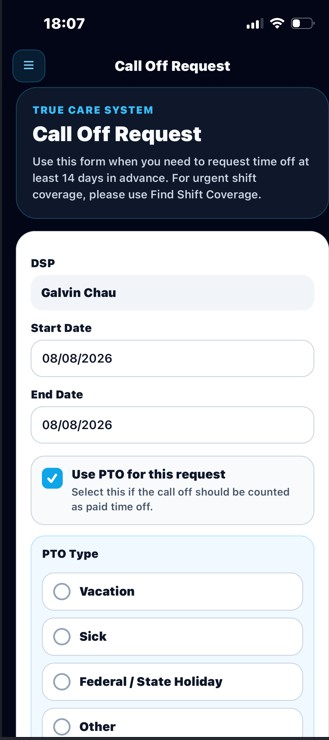

MOBILE EVV • STAFFING COMMUNICATION
Call Off Request
Submit an absence or PTO request and receive the office decision through the True Care System Mobile App.
Mobile EVV pages may display PHI, workforce information, GPS evidence, service records, and internal operational processes. Screenshots in this public guide use redacted or demonstration information. Certain compliance logic, approval rules, escalation paths, notification controls, and proprietary workflows are intentionally summarized and are trained directly for authorized Provider customers.
Purpose
Call Off Request gives eligible employees a documented way to notify the Provider that they are unable to work a scheduled period or that they are requesting approved paid or unpaid time away from work. The workflow captures the request details, routes the request to authorized office staff, records the office decision, and returns the approved or rejected result to the employee through the Mobile App.
This process supports timely staffing response, replacement coverage planning, PTO administration, payroll review, and an auditable communication history between field staff and office management.
Mobile Notification View
After the office reviews a request, the employee can receive the outcome in Messages From Office. Approved and rejected messages are visually separated so the employee can quickly identify the decision and read any supervisor note.

Core Functions
Employees enter the requested absence period, PTO selection, PTO type when applicable, and a reason for the request.
Authorized office users review staffing impact, employment eligibility, request dates, available documentation, and operational coverage needs.
The employee receives an approved or rejected result together with the reviewer, review timestamp, and any available supervisor note.
Request Information
| Field | General Purpose |
|---|---|
| Start Date | Identifies the first date affected by the absence or PTO request. |
| End Date | Identifies the final date affected by the request. |
| PTO | Indicates whether the employee is asking to use available paid time off. |
| PTO Type | Identifies the applicable category, such as vacation, sick leave, or another Provider-defined leave type. |
| Reason | Records the employee's explanation for the request. Employees should provide enough information for operational review without including unnecessary medical details. |
| Status | Shows the current workflow state, such as Pending, Approved, Rejected, or Cancelled. |
| Supervisor Note | Communicates approval conditions, rejection reasons, staffing instructions, or other office guidance. |
Recommended Employee Workflow
-
Open Call Off Request.
Use the Mobile App menu to open the request workspace.
-
Review the affected schedule period.
Confirm the correct start and end dates before submitting the request.
-
Select PTO information when applicable.
Indicate whether PTO is requested and choose the correct leave category.
-
Enter a clear reason.
Provide a concise operational explanation. Avoid entering unnecessary PHI or highly sensitive personal details.
-
Submit the request.
The request is sent to the office for review. Submission does not automatically mean the request has been approved.
-
Check Messages From Office.
Review the approval or rejection notice and follow any supervisor instructions.
Office Review Workflow
Authorized office staff review the request against Provider policy, scheduled services, staffing coverage, payroll and PTO rules, previously approved leave, and any other operational constraints. A decision may require coordination with supervisors, scheduling, payroll, HR, or Provider Administration.
| Decision | General Meaning |
|---|---|
| Pending | The request has been submitted but has not yet received a final office decision. |
| Approved | The Provider has accepted the request subject to any stated conditions or supervisor instructions. |
| Rejected | The request was not approved. The employee must follow the supervisor note and applicable attendance policy. |
| Cancelled | The request is no longer active because it was withdrawn, replaced, or cancelled according to Provider workflow. |
Relationship to Staffing Coverage
When an approved or urgent call-off affects a scheduled service, the Provider may use scheduling tools and the Mobile EVV Find Shift Coverage workflow to identify an eligible replacement employee. The system can help connect the original absence request with operational coverage actions while maintaining separate records for the employee request, the schedule adjustment, and the replacement shift.
Detailed replacement matching rules, emergency staffing logic, automated alerts, role permissions, and escalation timing are proprietary operational functions and are trained directly for Provider customers.
Payroll and PTO Considerations
- An approved Call Off Request does not automatically guarantee paid hours unless PTO is approved and the employee meets Provider policy.
- PTO balances, leave categories, payroll treatment, and overtime impact are governed by the Provider's employment policies and configured payroll rules.
- An employee should not record Mobile EVV service time for a shift that was not actually worked.
- Schedule, visit, payroll, and request records should remain consistent before payroll approval.
HIPAA and Privacy
Call Off Requests are workforce records and may also affect protected service information. Employees should provide only the minimum information necessary for the office to review the request. Detailed diagnoses, treatment information, medication information, or other unnecessary PHI should not be entered in the reason field.
Access is limited by role and Provider scope. True Care System may record the actor, timestamp, request status, reviewer, related operational action, IP address, device information, and other audit evidence according to the Provider's HIPAA and security configuration.
Security and Audit Controls
- Requests are associated with the authenticated employee account.
- Review actions are limited to authorized office roles.
- Approval and rejection decisions include reviewer and timestamp information.
- Provider data is isolated by Provider identity and role permissions.
- Sensitive workflow details may be included in audit logs and compliance history.
Best Practices
- Submit the request as early as possible.
- Confirm the correct dates before submission.
- Use the correct PTO type when paid leave is requested.
- Enter a concise, professional reason.
- Do not assume approval until the office decision is received.
- Review the supervisor note and follow any additional instructions.
- Contact the office directly when the situation is urgent or affects immediate health and safety coverage.
Troubleshooting
| Issue | Recommended Action |
|---|---|
| Request remains Pending | Refresh the Mobile App and contact the office when the affected shift is approaching. |
| No decision message appears | Open Messages From Office, refresh the page, and confirm that notifications are enabled. |
| Wrong dates were submitted | Contact the office immediately. Do not submit duplicate requests unless instructed. |
| PTO type is unavailable | Confirm employment eligibility and contact HR or Payroll for assistance. |
| Urgent same-day absence | Submit the request when possible and follow the Provider's required direct-call or emergency notification procedure. |
FAQ
Does submitting a request mean it is approved?
No. The request remains Pending until an authorized office user records a decision.
Can a rejected request be changed?
The employee should contact the office. The Provider may require a corrected request or another documented process.
Where can the employee see the decision?
The decision is available through Messages From Office and may also appear in related Mobile App notifications.
Should medical details be entered in the reason field?
No more than necessary. Employees should use minimum-necessary information and follow the Provider's HR and privacy policies.
What happens when a call off creates an uncovered shift?
Authorized staff may begin a replacement coverage workflow. Detailed assignment and escalation logic is provided during Provider training.